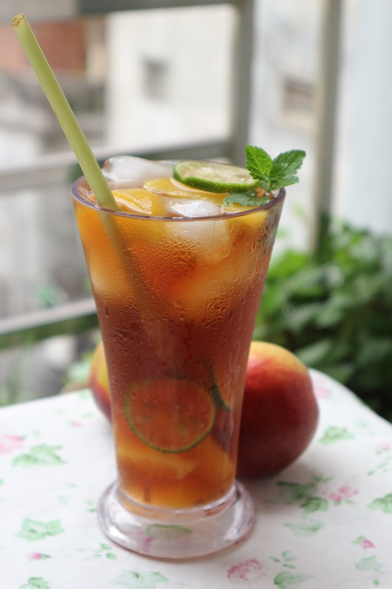
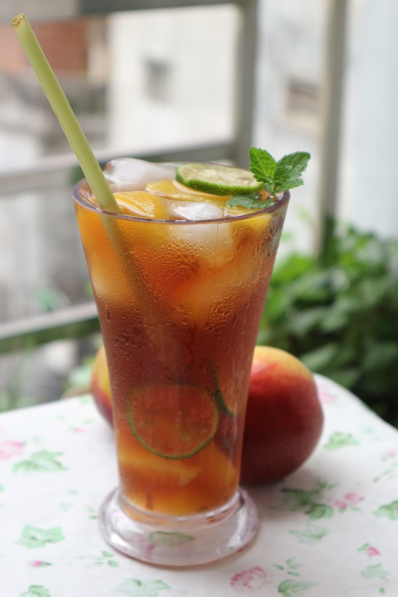
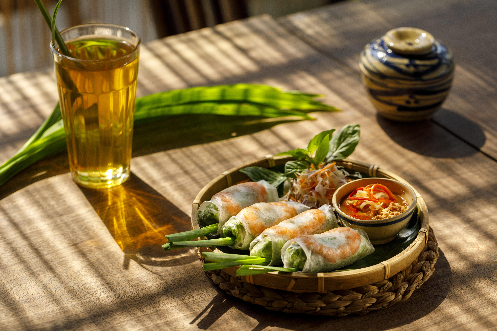
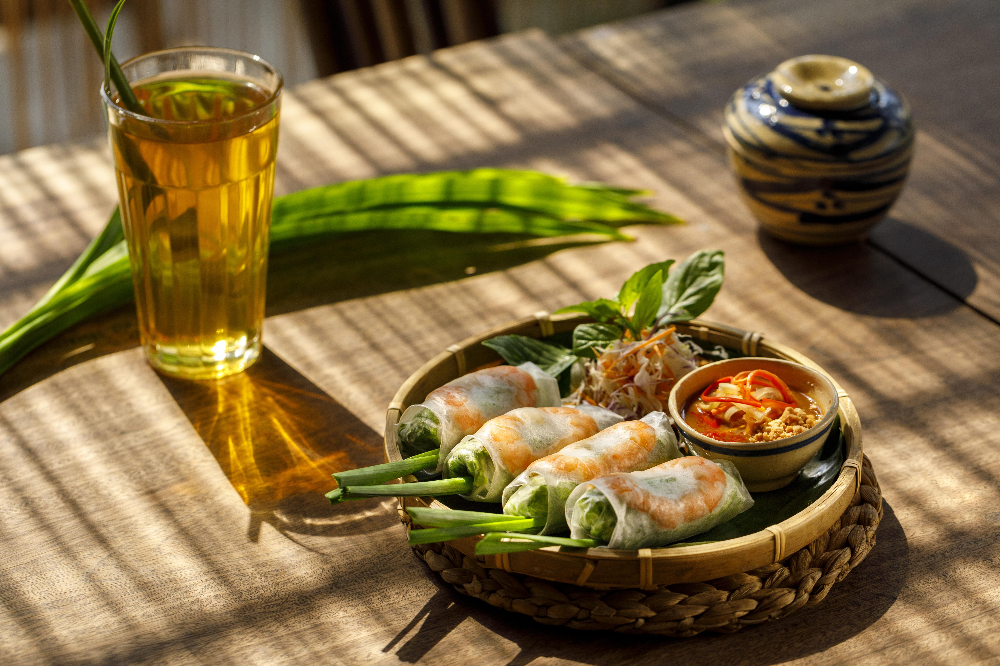

Dine Out Options Near You
 



 


One Food World
Rating: 4.7 (326 reviews)
Price: ₹200–400
Location: Gorbachev Rd
Open Hours: Open ⋅ Closes 9:30 PM
Services: Dine-in, Kerbside Pickup, No-contact Delivery
View on Google MapsZaitoon Restaurant
Rating: 4.8 (6,933 reviews)
Price: ₹₹
Location: 1st floor, Selvam Square, Tiruvalam Rd
Open Hours: Open ⋅ Closes 11:30 PM
Services: Dine-in, Takeaway, No-contact Delivery
View on Google MapsTom's Diner
Rating: 3.9 (1,524 reviews)
Price: ₹200–400
Location: Phase 3 St
Open Hours: Open ⋅ Closes 11:00 PM
Services: Dine-in, Drive-through, No-contact Delivery
View on Google MapsPunjabi Rassoi Real Taste of North Indian Food
Rating: 4.6 (517 reviews)
Price: ₹200–400
Location: X584+WMV, Kangayanellore Rd
Open Hours: Open ⋅ Closes 10:00 PM
Services: Dine-in, Drive-through, No-contact Delivery
View on Google MapsTN23 Food Square Restaurant
Rating: 4.8 (66 reviews)
Price: ₹200–400
Location: Opposite to VIT University Main Gate
Open Hours: Open ⋅ Closes 10:30 PM
Services: Dine-in, Takeaway, Delivery
View on Google MapsFC Restaurant
Rating: 3.9 (168 reviews)
Price: ₹200–400
Location: X5C5+3H9
Open Hours: Open ⋅ Closes 9:00 PM
Services: Dine-in, Takeaway
View on Google MapsAndhra Spice Restaurant
Rating: 3.9 (1,669 reviews)
Price: ₹200–400
Location: VIT Rd
Open Hours: Open ⋅ Closes 11:00 PM
Services: Dine-in, Drive-through, No-contact Delivery
View on Google MapsTara Maa Restaurant
Rating: 4.1 (1,197 reviews)
Price: ₹200–400
Location: Kangayanellore Rd
Open Hours: Open ⋅ Closes 10:00 PM
Services: Dine-in, Drive-through, No-contact Delivery
View on Google MapsApna Dhaba
Rating: 3.8 (758 reviews)
Price: ₹200–400
Location: Ad Street
Open Hours: Open ⋅ Closes 10:00 PM
Services: Dine-in, Takeaway, Delivery
View on Google MapsLimra Garden Restaurant
Rating: 4.0 (1,017 reviews)
Price: ₹1–200
Location: Opp VIT University, Vellaikalmedu
Open Hours: Open ⋅ Closes 9:30 PM
Services: Dine-in, Drive-through, No-contact Delivery
View on Google MapsThe Vellore Kitchen
Rating: 4.0 (2,137 reviews)
Price: ₹200–400
Location: Silk Mill, No: 27/4, 1st East Main Rd
Open Hours: Open ⋅ Closes 10:30 PM
Services: Dine-in, Kerbside Pickup, No-contact Delivery
View on Google MapsRevelry Cuisine
Rating: 5.0 (42 reviews)
Price: ₹200–400
Location: VIT Rd, Opposite Vellore-Chennai Road
Open Hours: Open ⋅ Closes 10:00 PM
Services: Dine-in, Takeaway, No-contact Delivery
View on Google MapsHot Stone Kitchen
Rating: 4.4 (783 reviews)
Price: ₹200–400
Location: 28, Fatha Apartment, Vivekanandha St
Open Hours: Open ⋅ Closes 10:00 PM
Services: Dine-in, Takeaway, No-contact Delivery
View on Google Maps